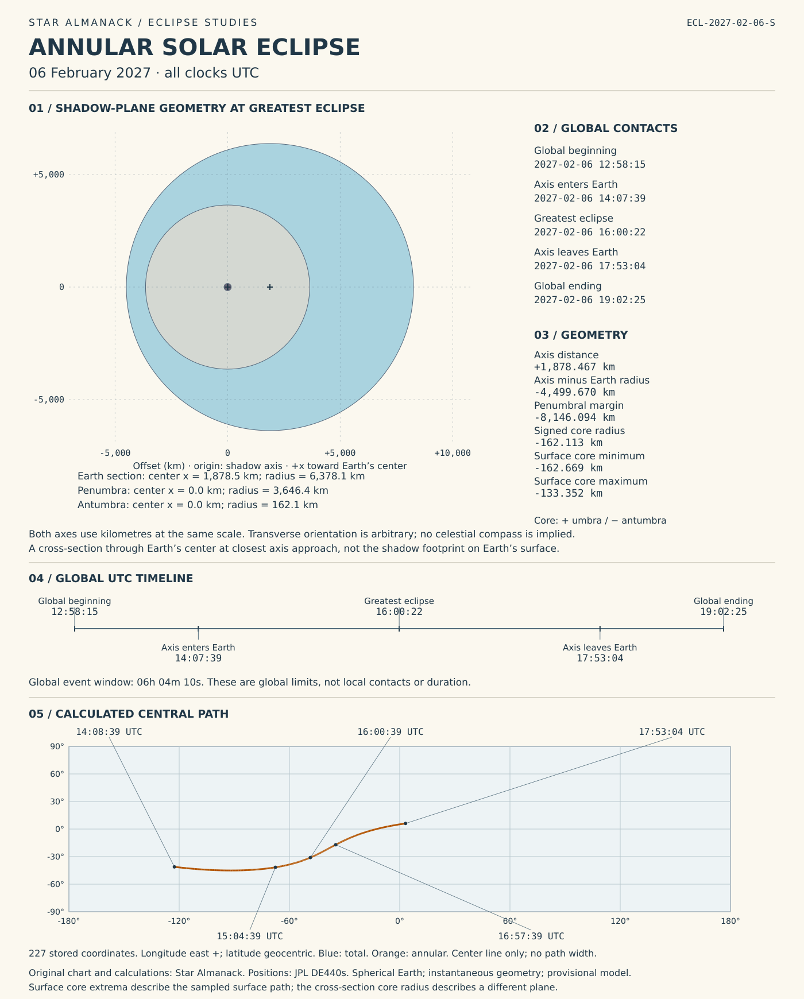

Annular solar eclipse
2027-02-06
Calculated solar eclipse study chart


Artwork generated by Star Almanack from its stored shadow geometry; Sun, Earth, and Moon positions use the credited JPL kernel.
Calculated central path
Star Almanack calculates these coordinates from its Sun–Moon shadow geometry. The line follows the center of the eclipse track. Total portions are blue; annular portions are orange. Longitude is positive east.
Labels give calculated event times; markers use the nearest stored path coordinates. Beginning and ending refer to the central axis crossing Earth, not the global partial-eclipse limits.
This uses a spherical Earth and instantaneous geometric positions. It does not yet include Earth’s flattening, light-time corrections, path width, local contact times, or the wider partial-eclipse visibility area. Future Earth rotation is estimated. Coordinates are model results, not a precision observing-site boundary.
Download coordinates (CSV) · Download track (GeoJSON)
All 227 calculated coordinates
| UTC | Latitude | Longitude | Central phase |
|---|---|---|---|
| -41.1633° | -122.6031° | annular | |
| -41.9894° | -118.9457° | annular | |
| -42.5652° | -116.1388° | annular | |
| -43.0096° | -113.7716° | annular | |
| -43.3688° | -111.6859° | annular | |
| -43.6666° | -109.8005° | annular | |
| -43.9173° | -108.0674° | annular | |
| -44.1301° | -106.4554° | annular | |
| -44.3116° | -104.9427° | annular | |
| -44.4664° | -103.5136° | annular | |
| -44.5984° | -102.1563° | annular | |
| -44.7102° | -100.8615° | annular | |
| -44.8041° | -99.6219° | annular | |
| -44.8820° | -98.4316° | annular | |
| -44.9455° | -97.2858° | annular | |
| -44.9958° | -96.1803° | annular | |
| -45.0340° | -95.1116° | annular | |
| -45.0611° | -94.0769° | annular | |
| -45.0779° | -93.0736° | annular | |
| -45.0851° | -92.0994° | annular | |
| -45.0834° | -91.1525° | annular | |
| -45.0734° | -90.2311° | annular | |
| -45.0555° | -89.3337° | annular | |
| -45.0302° | -88.4590° | annular | |
| -44.9980° | -87.6056° | annular | |
| -44.9591° | -86.7725° | annular | |
| -44.9140° | -85.9587° | annular | |
| -44.8630° | -85.1633° | annular | |
| -44.8063° | -84.3854° | annular | |
| -44.7442° | -83.6243° | annular | |
| -44.6770° | -82.8792° | annular | |
| -44.6049° | -82.1495° | annular | |
| -44.5281° | -81.4346° | annular | |
| -44.4468° | -80.7339° | annular | |
| -44.3612° | -80.0469° | annular | |
| -44.2714° | -79.3731° | annular | |
| -44.1777° | -78.7120° | annular | |
| -44.0802° | -78.0632° | annular | |
| -43.9790° | -77.4263° | annular | |
| -43.8742° | -76.8008° | annular | |
| -43.7660° | -76.1866° | annular | |
| -43.6546° | -75.5831° | annular | |
| -43.5399° | -74.9900° | annular | |
| -43.4222° | -74.4071° | annular | |
| -43.3015° | -73.8341° | annular | |
| -43.1779° | -73.2706° | annular | |
| -43.0516° | -72.7164° | annular | |
| -42.9225° | -72.1712° | annular | |
| -42.7909° | -71.6349° | annular | |
| -42.6567° | -71.1071° | annular | |
| -42.5201° | -70.5876° | annular | |
| -42.3811° | -70.0762° | annular | |
| -42.2397° | -69.5727° | annular | |
| -42.0961° | -69.0769° | annular | |
| -41.9504° | -68.5886° | annular | |
| -41.8025° | -68.1076° | annular | |
| -41.6526° | -67.6337° | annular | |
| -41.5006° | -67.1668° | annular | |
| -41.3467° | -66.7066° | annular | |
| -41.1909° | -66.2531° | annular | |
| -41.0332° | -65.8060° | annular | |
| -40.8737° | -65.3653° | annular | |
| -40.7125° | -64.9307° | annular | |
| -40.5495° | -64.5021° | annular | |
| -40.3849° | -64.0793° | annular | |
| -40.2186° | -63.6623° | annular | |
| -40.0507° | -63.2509° | annular | |
| -39.8812° | -62.8450° | annular | |
| -39.7102° | -62.4444° | annular | |
| -39.5377° | -62.0490° | annular | |
| -39.3638° | -61.6588° | annular | |
| -39.1884° | -61.2735° | annular | |
| -39.0116° | -60.8930° | annular | |
| -38.8334° | -60.5174° | annular | |
| -38.6539° | -60.1464° | annular | |
| -38.4730° | -59.7799° | annular | |
| -38.2909° | -59.4179° | annular | |
| -38.1075° | -59.0602° | annular | |
| -37.9228° | -58.7067° | annular | |
| -37.7370° | -58.3574° | annular | |
| -37.5499° | -58.0121° | annular | |
| -37.3616° | -57.6708° | annular | |
| -37.1722° | -57.3333° | annular | |
| -36.9816° | -56.9997° | annular | |
| -36.7899° | -56.6697° | annular | |
| -36.5971° | -56.3433° | annular | |
| -36.4032° | -56.0204° | annular | |
| -36.2082° | -55.7009° | annular | |
| -36.0122° | -55.3848° | annular | |
| -35.8151° | -55.0720° | annular | |
| -35.6170° | -54.7624° | annular | |
| -35.4178° | -54.4558° | annular | |
| -35.2177° | -54.1524° | annular | |
| -35.0166° | -53.8518° | annular | |
| -34.8145° | -53.5542° | annular | |
| -34.6114° | -53.2594° | annular | |
| -34.4074° | -52.9673° | annular | |
| -34.2024° | -52.6779° | annular | |
| -33.9965° | -52.3911° | annular | |
| -33.7897° | -52.1068° | annular | |
| -33.5819° | -51.8250° | annular | |
| -33.3732° | -51.5456° | annular | |
| -33.1637° | -51.2686° | annular | |
| -32.9532° | -50.9938° | annular | |
| -32.7418° | -50.7212° | annular | |
| -32.5296° | -50.4508° | annular | |
| -32.3164° | -50.1824° | annular | |
| -32.1024° | -49.9160° | annular | |
| -31.8876° | -49.6516° | annular | |
| -31.6718° | -49.3891° | annular | |
| -31.4552° | -49.1284° | annular | |
| -31.2378° | -48.8695° | annular | |
| -31.0814° | -48.6850° | annular | |
| -31.0195° | -48.6123° | annular | |
| -30.8003° | -48.3567° | annular | |
| -30.5803° | -48.1028° | annular | |
| -30.3595° | -47.8503° | annular | |
| -30.1378° | -47.5993° | annular | |
| -29.9153° | -47.3498° | annular | |
| -29.6919° | -47.1016° | annular | |
| -29.4677° | -46.8547° | annular | |
| -29.2426° | -46.6090° | annular | |
| -29.0167° | -46.3645° | annular | |
| -28.7900° | -46.1212° | annular | |
| -28.5624° | -45.8789° | annular | |
| -28.3339° | -45.6376° | annular | |
| -28.1047° | -45.3972° | annular | |
| -27.8745° | -45.1578° | annular | |
| -27.6436° | -44.9192° | annular | |
| -27.4117° | -44.6814° | annular | |
| -27.1790° | -44.4443° | annular | |
| -26.9455° | -44.2079° | annular | |
| -26.7111° | -43.9720° | annular | |
| -26.4758° | -43.7368° | annular | |
| -26.2396° | -43.5020° | annular | |
| -26.0026° | -43.2676° | annular | |
| -25.7646° | -43.0336° | annular | |
| -25.5258° | -42.7999° | annular | |
| -25.2861° | -42.5665° | annular | |
| -25.0454° | -42.3333° | annular | |
| -24.8039° | -42.1002° | annular | |
| -24.5614° | -41.8671° | annular | |
| -24.3180° | -41.6341° | annular | |
| -24.0737° | -41.4010° | annular | |
| -23.8284° | -41.1678° | annular | |
| -23.5821° | -40.9344° | annular | |
| -23.3349° | -40.7007° | annular | |
| -23.0866° | -40.4668° | annular | |
| -22.8374° | -40.2324° | annular | |
| -22.5872° | -39.9976° | annular | |
| -22.3360° | -39.7622° | annular | |
| -22.0837° | -39.5263° | annular | |
| -21.8304° | -39.2897° | annular | |
| -21.5760° | -39.0523° | annular | |
| -21.3206° | -38.8141° | annular | |
| -21.0640° | -38.5750° | annular | |
| -20.8063° | -38.3349° | annular | |
| -20.5476° | -38.0938° | annular | |
| -20.2876° | -37.8515° | annular | |
| -20.0265° | -37.6080° | annular | |
| -19.7642° | -37.3632° | annular | |
| -19.5007° | -37.1170° | annular | |
| -19.2360° | -36.8692° | annular | |
| -18.9700° | -36.6199° | annular | |
| -18.7027° | -36.3689° | annular | |
| -18.4341° | -36.1161° | annular | |
| -18.1642° | -35.8614° | annular | |
| -17.8930° | -35.6046° | annular | |
| -17.6203° | -35.3458° | annular | |
| -17.3463° | -35.0847° | annular | |
| -17.0707° | -34.8213° | annular | |
| -16.7937° | -34.5553° | annular | |
| -16.5152° | -34.2868° | annular | |
| -16.2351° | -34.0155° | annular | |
| -15.9535° | -33.7414° | annular | |
| -15.6702° | -33.4642° | annular | |
| -15.3852° | -33.1838° | annular | |
| -15.0985° | -32.9001° | annular | |
| -14.8100° | -32.6128° | annular | |
| -14.5197° | -32.3219° | annular | |
| -14.2276° | -32.0271° | annular | |
| -13.9335° | -31.7282° | annular | |
| -13.6374° | -31.4250° | annular | |
| -13.3393° | -31.1174° | annular | |
| -13.0391° | -30.8051° | annular | |
| -12.7366° | -30.4878° | annular | |
| -12.4320° | -30.1653° | annular | |
| -12.1249° | -29.8373° | annular | |
| -11.8155° | -29.5036° | annular | |
| -11.5036° | -29.1638° | annular | |
| -11.1890° | -28.8176° | annular | |
| -10.8718° | -28.4647° | annular | |
| -10.5517° | -28.1046° | annular | |
| -10.2287° | -27.7371° | annular | |
| -9.9026° | -27.3616° | annular | |
| -9.5734° | -26.9778° | annular | |
| -9.2407° | -26.5850° | annular | |
| -8.9046° | -26.1828° | annular | |
| -8.5648° | -25.7706° | annular | |
| -8.2211° | -25.3477° | annular | |
| -7.8734° | -24.9134° | annular | |
| -7.5213° | -24.4670° | annular | |
| -7.1647° | -24.0075° | annular | |
| -6.8033° | -23.5342° | annular | |
| -6.4367° | -23.0458° | annular | |
| -6.0646° | -22.5412° | annular | |
| -5.6866° | -22.0192° | annular | |
| -5.3024° | -21.4781° | annular | |
| -4.9113° | -20.9164° | annular | |
| -4.5128° | -20.3321° | annular | |
| -4.1064° | -19.7228° | annular | |
| -3.6911° | -19.0861° | annular | |
| -3.2661° | -18.4189° | annular | |
| -2.8305° | -17.7173° | annular | |
| -2.3828° | -16.9772° | annular | |
| -1.9215° | -16.1930° | annular | |
| -1.4448° | -15.3579° | annular | |
| -0.9501° | -14.4634° | annular | |
| -0.4342° | -13.4983° | annular | |
| 0.1072° | -12.4472° | annular | |
| 0.6801° | -11.2888° | annular | |
| 1.2937° | -9.9910° | annular | |
| 1.9624° | -8.5023° | annular | |
| 2.7126° | -6.7289° | annular | |
| 3.6030° | -4.4612° | annular | |
| 4.8493° | -0.9265° | annular | |
| 6.1002° | 3.1728° | annular |
What this eclipse means
The Moon passes in front of the Sun but appears too small to cover it completely. Along the narrow path of annularity, a bright ring of the Sun remains around the Moon. Outside that path, observers in the wider visibility region see a partial eclipse. The Sun’s bright surface is never completely hidden.
What to look for
From the annular path, watch the crescent become a ring through approved solar viewers or a properly filtered instrument. Elsewhere, follow the crescent’s changing shape. The ring is a direct demonstration that the Sun and Moon’s apparent sizes change with their distances.
This event
- Greatest eclipse (UTC)
- February 6, 2027 at 16:00:22 UTC
- Position source
- JPL DE440s kernel; Star Almanack shadow geometry
Timing and phases
All times are UTC. Convert both date and time to your local time.
These are global limits, not contact times or duration at your location.
| Phase | UTC |
|---|---|
| Eclipse begins somewhere on Earth global_begin | |
| Shadow axis enters Earth’s spherical surface axis_entry | |
| Greatest eclipse greatest_utc | |
| Shadow axis leaves Earth’s spherical surface axis_exit | |
| Eclipse ends everywhere on Earth global_end |
Durations derived from the stored times
- Global event window; not duration at one location (global_begin–global_end): 6 h 4 min 10 s
Calculated geometry
Stored catalog values at greatest eclipse. Signs and precision are retained as calculated.
| Quantity | Value | Meaning |
|---|---|---|
| Shadow-axis distance axis_distance_km | 1878.467 km | Closest distance of the Sun–Moon shadow axis from Earth’s center at greatest eclipse. |
| Penumbral margin penumbra_margin_km | -8146.094 km | Axis distance minus the sum of Earth’s radius and the penumbral radius; negative indicates overlap in the engine’s geometry. |
| Shadow-axis margin central_margin_km | -4499.67 km | Axis distance minus Earth’s radius; negative means the shadow axis passes inside Earth’s radius. |
| Signed central-shadow radius core_radius_km | -162.113 km | Shadow-core radius at the plane of closest axis approach to Earth’s center. Positive denotes umbra; negative denotes antumbra. |
| Minimum surface shadow-core radius surface_core_radius_min_km | -162.669 km | Smallest sampled signed core radius where the shadow axis meets the near-side spherical Earth surface. Negative indicates annularity. |
| Maximum surface shadow-core radius surface_core_radius_max_km | -133.352 km | Largest sampled signed core radius along that surface path. Positive indicates totality. Opposite signs between the extrema indicate a hybrid eclipse. |
Watching the eclipse
Use eclipse glasses or a handheld solar viewer meeting ISO 12312-2 for direct viewing. Ordinary sunglasses are not suitable. Binoculars, cameras, and telescopes require purpose-made solar filters secured over the front of the optics; never look through them using eclipse glasses alone. Keep solar protection in place throughout this eclipse, including any annular ring.
Calculation records
Download complete stored record (JSON)
Sources
Sources: NASA: solar viewing safety
Explanatory text and eclipse calculations are original work by Star Almanack. The calculations use Sun, Earth, and Moon positions from JPL’s DE440s ephemeris kernel. Event times, shadow geometry, and the supplied central-path coordinates are calculated by Star Almanack from those positions.